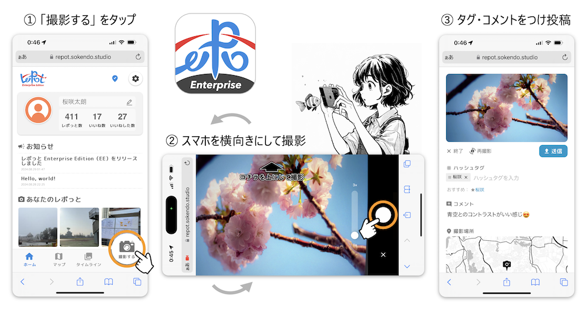
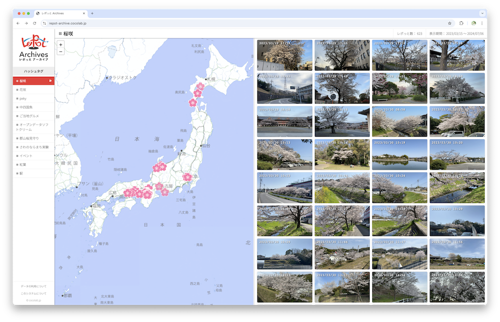

プロジェクトの概要
桜の名所の情報は世の中に沢山あるけれども、名所以外にも身近な所でもキレイな桜はありますよね。 ｢＃桜咲（さくさく）プロジェクト｣ は、 そんな隠れた桜スポットの「位置情報付き写真」データを全国のみんなで集めてオープンデータにする取り組みです。
2025年の#桜咲プロジェクトは、YuMake株式会社（CEO：佐藤拓也）、創研堂合同会社（代表：松田裕貴）、および岡山大学コンヴィヴィアルコンピューティング研究室にて主催し、Open Data Day (ODD) のイベントとして開催します。
- 開催期間
- 2025年3月3日〜桜が散るまで
- 開催場所
- 世界中どこでも
プロジェクトに参加するには
#桜咲 プロジェクトへの参加方法は、レポっと Enterprise Edition（提供元：創研堂合同会社）上で写真を撮影し「#桜咲」のハッシュタグを付けて投稿するだけです。 桜を見つけた際に、レポっとで写真を撮影してプロジェクトに参加しましょう！ 
詳細なレポっとアプリの使用方法は、こちらのブログ記事をご覧ください。
https://note.com/yukimat/n/n230284cc3031
集めた情報はオープンデータに
投稿された桜の位置情報付き写真は、レポっと Archives（提供元：岡山大学コンヴィヴィアルコンピューティング研究室）にてオープンデータとして公開されます。 
データは「レポっとオープンデータライセンス」の下で公開されます。
データの利用者は「レポっと」とその協力者をクレジットする限り、データを自由に利用することができます。
ライセンスの詳細については、レポっと Archivesのデータ利用ガイドラインをご覧ください。
https://repot-archive.cocolab.jp/?h=sakusaku